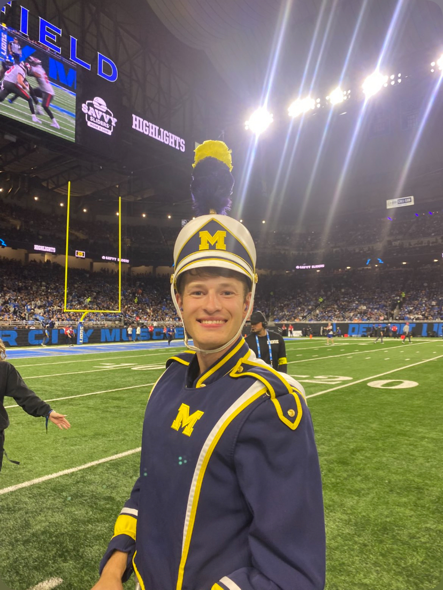
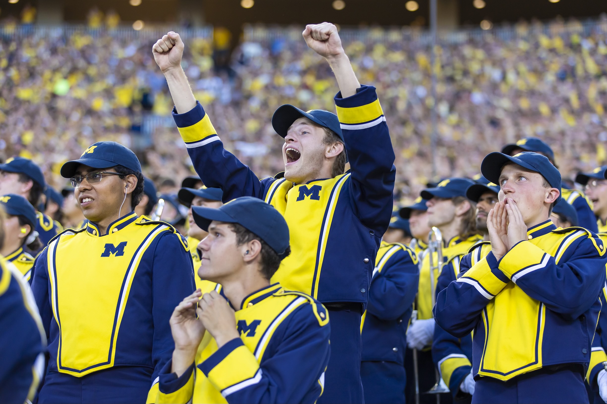
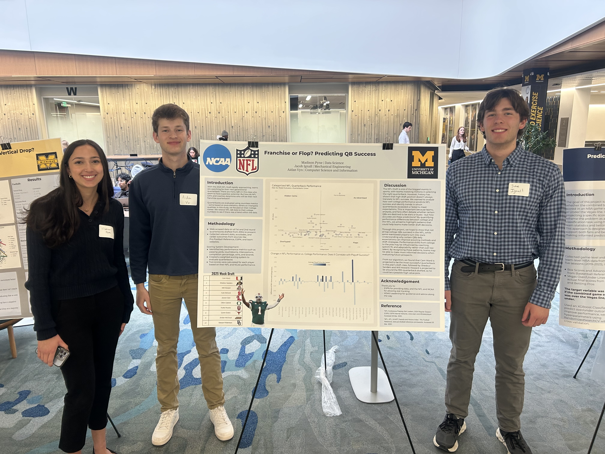
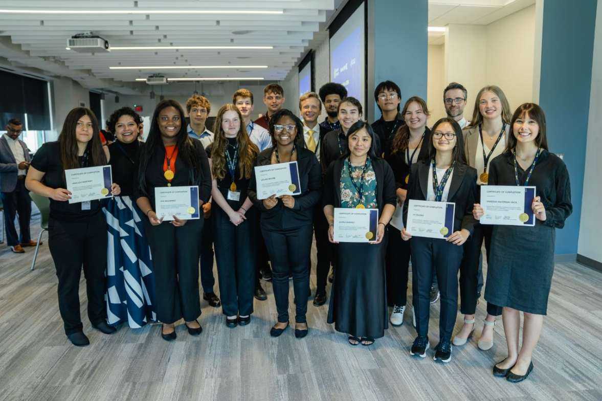
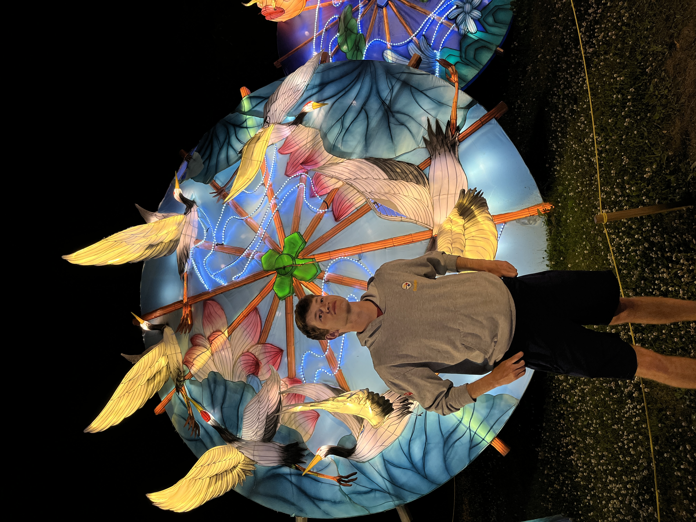
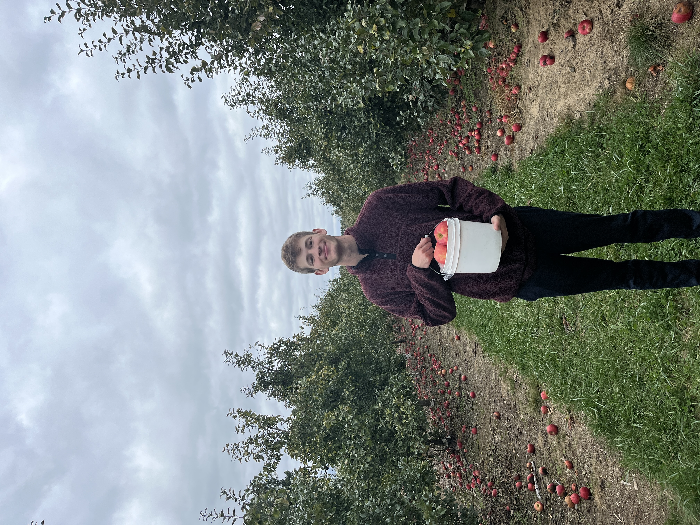
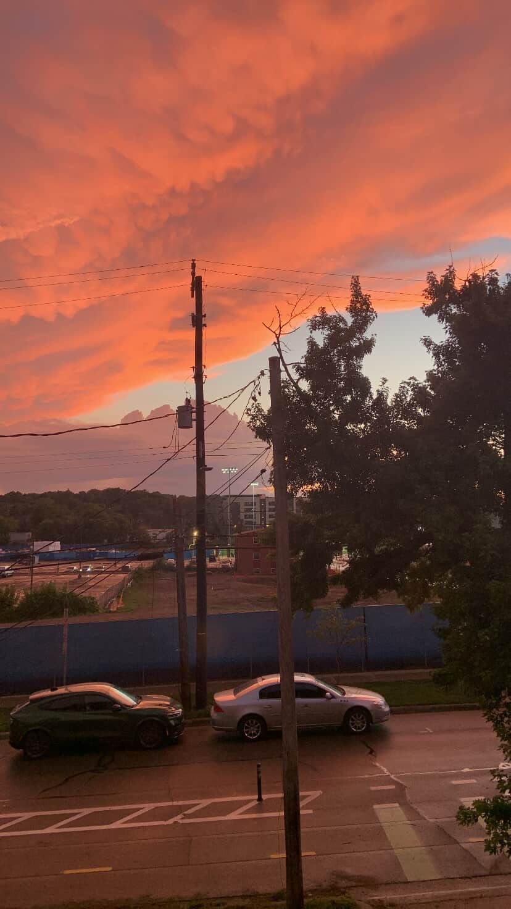

I am a musician! I am a member of the Michigan Marching Band in the drumline.

I'm a current undergraduate student in UX Design with a minor in Computer Science at the University of Michigan.

I am a musician! I am a member of the Michigan Marching Band in the drumline.

I am part of the Michigan Sports Analytics Society where we complete data-driven projects.

I spent time at BAMF Health and Kendall College of Art and Design learning about design thinking and solving real-world problems.



